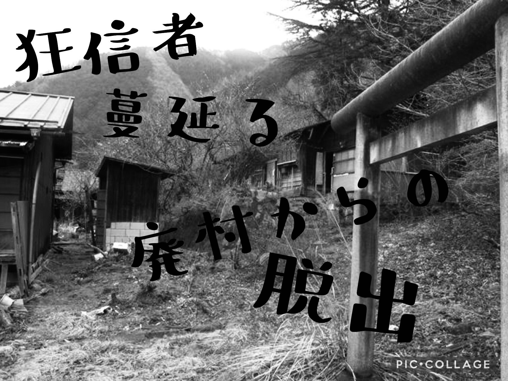

全ステージ クリア！
猪とき、そう儀式の時間は残り数分にまで近づいていた。
友人は慌てて時計塔の短針を一つずらし、なんとか時間稼ぎに成功した。
そのとき、目撃者の通報によって駆けつけた警官が、本来処刑されていた時間に突入してきたのだった。
あと少しでも遅ければ・・・

後日、友人から電話がかかってきた。
ありがとう、君のおかげで助かったよ。
この体験は今後の旅行に生かせそうだ。
だけどもまた助けを呼ぶかもしれない、そのときはまた頼ってもいいか？
ゲームクリア！
遊んでくれてありがとう！
Special Thanks
リアル脱出ゲームとは
2004年に発表されたネットで爆発的に盛り上がった「脱出ゲーム」を、そのフォーマットそのままに現実世界に移し替えた大胆な遊びが「リアル脱出ゲーム」。マンションの1室や廃校、廃病院、そして東京ドームや六本木ヒルズなど、様々な場所で開催され、2007年に初開催して以降、現在までで累計820万人以上を動員。日本のみならず上海、台湾、シンガポールやサンフランシスコなど全世界で参加者を興奮の渦に巻き込み、男女問わずあらゆる世代を取り込む、今大注目の体験型エンターテインメント。
このゲームの企画者
企画・制作メンバーの紹介など。
岡本哲平 大西悠生 平野克真
霜鳥佑真 山本晃平